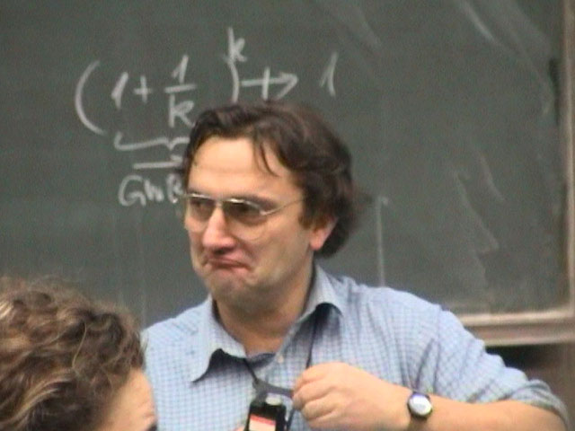
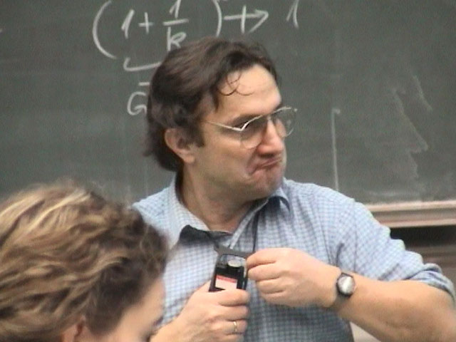
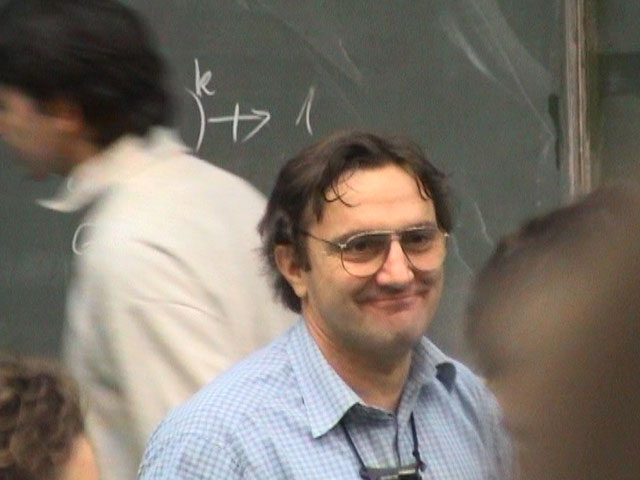

Die beschweren sich alle, ich würde zu klein schreiben — das nervt!

Ob ich das Mikro lauter stelle, damit ich das Genöle nicht mehr höre? Nein…

… ich werde einfach so schnell weiterschreiben, daß keine Zeit zum Beschweren bleibt!